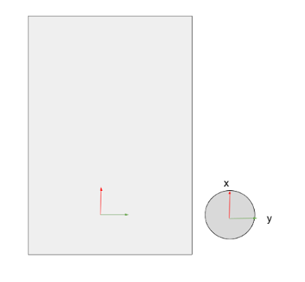
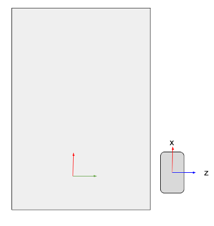

Modèle
Un fichier URDF (Unified Robot Description Format) est un format de fichier XML utilisé pour décrire les différentes parties d'un robot ainsi que leurs relations les unes avec les autres. Il définit les propriétés géométriques, dynamiques et sémantiques d'un robot.
Le fichier URDF est utilisé pour créer un modèle 3D du robot, qui peut être visualisé dans des outils de visualisation tels que RViz dans ROS (Robot Operating System). On utilise ce modèle pour planifier les mouvements du robot, pour la simulation et pour la reconnaissance du monde environnant. Les informations sur les jointures, les moteurs, les capteurs, les liens et les jointures sont décrites dans le fichier URDF.
Corps
Ci-dessous, les dimensions du corps du robot:

Collision
On genere un rectangle correpondant au corps du robot:
L’origine du corps se trouve au centre du rectangle, on souhaite décaler cette origine pour la placer au niveau de l’entraxe des roues, on decale donc l’axe x de 0.2 m
Sur gazebo il est important de distingué deux paramètres de géométrie: Visual et colision. Une géometrie “collision” elle aura des paramètre physique et sera donc soumis au frottement, friction, gravité..
<collision>
<origin xyz="0.2 0 0.0" rpy="0 0 0"/>
<geometry>
<box size="0.6 0.420 0.115"/>
</geometry>
</collision>
Visuel
Une géometrie “visual” elle, sera purement visuel. Nous pouvons ajouter un mesh, un fichier 3D format STL que nous avons génerer avec un logicielle de CAO.
<visual>
<origin xyz="0.2 0 0.0" rpy="0 0 -1.57"/>
<geometry>
<mesh filename="package://rescue_description/meshes/base_link.stl" scale="0.001 0.001 0.001"/>
</geometry>
<material name="light_black"/>
</visual>
Physique
Désormais nous devons definir l’inertie de notre pièce. Notre corps est un rectangle, pour faciliter la tâche, nous pouvons inclure une macro qui calcul la matrice d’inertie d’un rectangle en fonction de sa masse et ses dimension. On y ajoute egalement l’origine du corp.
<xacro:macro name="box_inertia" params="m w h d x y z">
<inertial>
<origin xyz="${x} ${y} ${z}" rpy="${pi/2} 0 ${pi/2}"/>
<mass value="${m}"/>
<inertia ixx="${(m/12) * (h*h + d*d)}" ixy="0.0" ixz="0.0" iyy="${(m/12) * (w*w + d*d)}" iyz="0.0" izz="${(m/12) * (w*w + h*h)}"/>
</inertial>
</xacro:macro>
Nous pouvons appeler la macro dans la definiton du corps

Roue
Les roues peuvent être representer comme des cylindres. voici leur dimensions:

On créer un link que l’on appelle Roue_Droite
On genère un cylindre avec les bonnes dimensions
On place l’origine de la pièce en son centre:

Pour l'assembler au corps, nous devons créer le joint entre la roue droite et le corps du robot.
Le joint est de type "continuous” pour indiquer une rotation autour d’un axe unique
On definit les lien de parenté:
on definit l’origine du joint
Cette origine est la distance entre les origines du link père et mère en prenant comme origne fixe celle du père On Sohaite décaler la roue par rapport à l'origine du corps:
On remarque que la roue n’est pas orienté correctement, il est necessaire de réaliser une rotation de 90° autour de l’axe x

rotation de 90° = π/2 = 1.57 autour de l’axe x et decalage en y (epaisseur de la roue):
Enfin , on definit l’axe de rotation de notre roue, ici, l’axe z
Footprint
Le footprint du robot definit l’empreinte du robot dans l’espace. Ce paramètre permet aux algorithme de navigation de connaitre les dimensions du robot. La délimitation se définit en 4 point A,B,C,D

Nous devons choisir des points qui permettent de couvrir l’integralité de l'espace pris par le robot L’origine se base par rapport au base_link definit précédemment. Dans l’exemple ci-dessous nous avons representé les 4 points correspondant aux angle du corps du robot
Le footprint correspondant est le suivant:
Pour couvrir le robot et ajouter une zone securité nous allons utiliseé un footprint légèrement plus grand:
Assemblage complet
De la même manière que pour les roues et le corps on ajoute a notre modele, les flipper, une roues libre, le lidar et la caméra
toue les joints sont des joint fixes enfant du link corps
arborescence
- corps
- roue_droite
- roue_gauche
- flipper_droit
- flipper_gauche
- roue_libre
- caméra
- lidar

Dans le lien github suivant le modèle complet